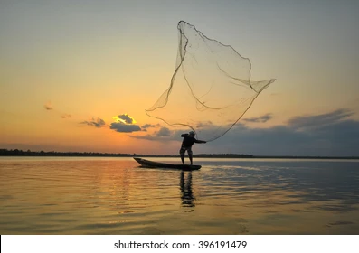
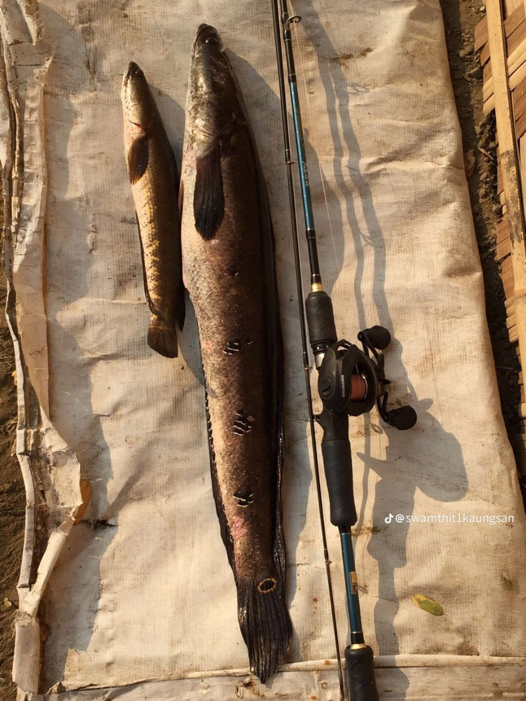
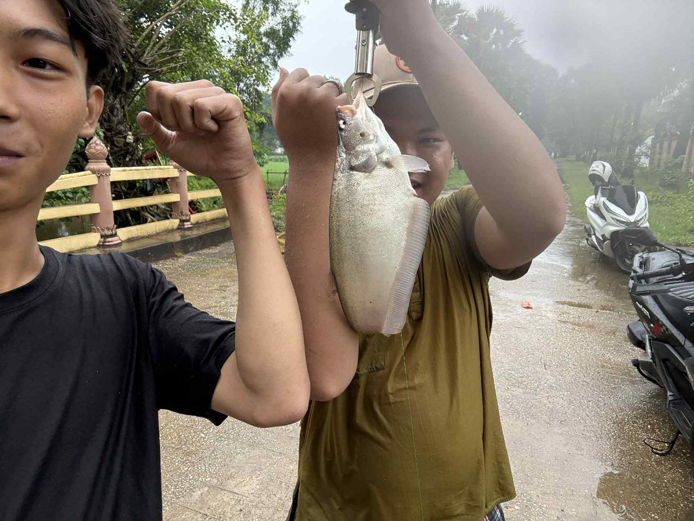

Welcome to Fishing in Myanmar
Fishing has always been an important part of Myanmar’s culture and livelihood. From the Irrawaddy River to the Andaman Sea, Myanmar is home to diverse fish species and stunning landscapes for fishermen and tourists alike.
View Gallery
Location And Time
For Snakehead
For Chitala chitala
Top Fishing Regions
Photo Gallery

